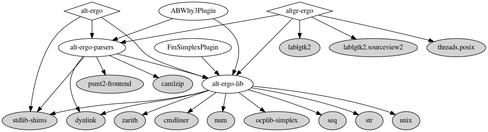

Installation
From a package manager
Alt-ergo is available on opam, the ocaml package manager with the following command :
opam install alt-ergo
This command will install the Alt-ergo library alt-ergo-lib and the parsers alt-ergo-parsers, as well as other librairies detailled in dependencies.
Since version 2.6.0, Alt-Ergo is compatible with opam 2.2 installations using both Cygwin and MSYS2 on Windows. To setup opam on Windows, please follow the instructions here.
From GitHub releases (Linux and macOS)
For convenience, binary releases for Linux and macOS (amd64 and arm64) of Alt-Ergo are provided on the GitHub release page. These binary releases are statically linked and very portable. They are distributed under the same licensing restrictions as the source code.
From sources
Dependencies
External dependencies graph generated with dune-deps (use make archi for source files dependencies):

To compile the sources of the library alt-ergo-lib and the binary alt-ergo, you will need the
following libraries :
ocaml >= 4.08.1
dune >= 3.0
dune-build-info
dune-site
dolmen >= 0.10
dolmen_type >= 0.10
dolmen_loop >= 0.10
ocplib-simplex >= 0.5.1
zarith >= 1.11
seq
fmt >= 0.9.0
ppx_blob >= 0.7.2
camlzip >= 1.07
menhir
dune-site
cmdliner >= 1.1.0
psmt2-frontend >= 0.4
stdlib-shims
ppx_deriving
You can install dependencies using:
$ make deps
and create a development switch with:
$ make dev-switch
Build and Install
The steps below will build and install native or bytecode binaries depending on whether ocamlopt is installed or only ocamlc is detected.
Note: these are somewhat obsolete; nowadays you can just use dune
Everything (binaries, plugins, library, …)
Compile with
makeInstall with
make install-allUninstall with
make uninstall-all
Alt-Ergo library
Compile with
make alt-ergo-libInstall with
make install-lib
Alt-Ergo parsers
Compile with
make alt-ergo-parsersInstall with
make install-parsers
Alt-Ergo binary
Compile with
make alt-ergoInstall with
make install-bin
Alt-Ergo with Nodejs
You can install dependencies using:
$ make js-deps
Compile with
make js-node
For this build rule you will need the following aditional libraries :
js_of_ocaml >= 5.4.0
zarith_stubs_js >= v0.16.1
Alt-Ergo web worker
Compile with
make js-worker
For this build rule you will need the following aditional libraries :
js_of_ocaml >= 5.4.0
js_of_ocaml-lwt
zarith_stubs_js >= v0.16.1
data-encoding
Alt-Ergo web worker small example
Compile with
make js-example
This command create a www/ directory in which you can find a small js example running in the index.html file
For this build rule you will need the following aditional libraries :
js_of_ocaml >= 5.4.0
js_of_ocaml-lwt
js_of_ocaml-ppx
lwt_ppx
zarith_stubs_js >= v0.16.1
data-encoding
Plugins
The steps below will build and install additional plugins (extension .cmxs if ocamlopt is installed or .cma if only ocamlc is detected).
The SatML Plugin
satML is now inlined and compiled directly with Alt-Ergo’s source code
The Fm-Simplex Plugin
Compile with
make fm-simplexThe Fm-Simplex plugin is currently built and installed at the same time as the alt-ergo binary.
The AB-Why3 parser plugin
Compile with
make AB-Why3The AB-Why3 plugin is currently built and installed at the same time as the alt-ergo binary.
You can find more information in the AB-Why3 README
The profiler plugin
This plugin has been “inlined” in Alt-Ergo sources.